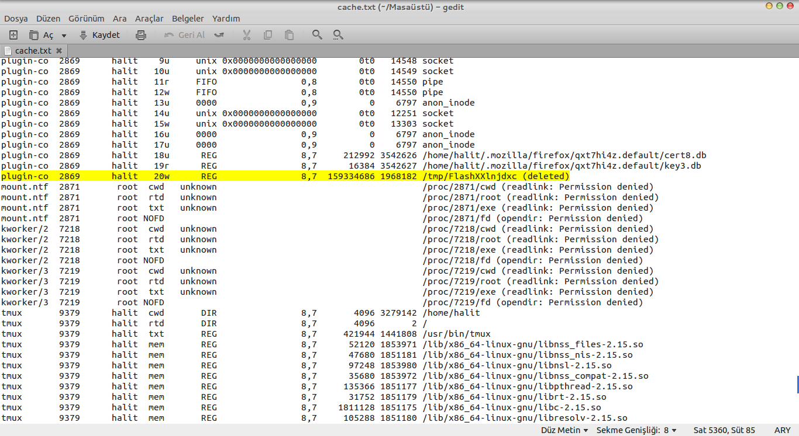

Çok sık olmasa da ara ara internet üzerinden dizi izliyorum. Bulunduğum yerdeki internetin aşırı yavaş olmasından dolayı genelde videoları açık bırakıp yüklenmesini beklerken ben başka işlerle uğraşıyorum. Bazen internetim o kadar yavaş oluyor ki 2-3 saate anca tamamlanıyor. İşte hal böyle olunca firefox’ta yaptığım işlemlerden dolayı kasıyor. Video’da donma ve seste takılmalara yol açıyor. Bende bu sorunu çözmek için izlediğim video dosyalarının bilgisayarım üzerinde saklandığı konumu bulup kaydetmeyi düşündüm.
Bildiğiniz gibi internet üzerindeki izlediğiniz, dinlediğiniz tüm medyalar aslında bilgisayarınıza kaydediliyor ve siz izledikten sonra siliniyor. Firefox’ta bu dosyaları Linux üzerinde /tmp/ dizini altına kaydediyor ve daha sonra siliyor.
Eğer isterseniz bu silinen dosyaları gayet basit bir şekilde geri getirebilirsiniz. Öncelikle lsof komutu ile silinen dosyamız hakkında biraz bilgi edinmemiz lazım. Bu komutun çıktısı büyük olabileceği için lsof > /home/cache.txt şeklinde bir metin dosyasına kaydedebilirsiniz.

Daha sonra bu dosya içinden bizim işimize yarayacak olan kısmı bulmamız gerekiyor. Firefox medyaları /tmp/ dizini altına genellikle Flash ile başlayan bir değer ile kaydediyor. Ve daha sonra bu dosyayı siliyor. Ancak biz bu dosyaya hala erişebiliriz. Öncelikle aradığımız dosya ile ilgili nitelikleri öğrenmemiz lazım.
Yukardaki resimde işaretli olan satır benim aradığım medya dosyası. Bu dosyanın bize pid ve fd değerleri lazım. Bu dosyadaki satırlar COMMAND PID USER FD TYPE DEVICE SIZE/OFF NODE NAME şeklinde düzenlendiği için buradan yola çıkarak aradığımız değerleri bir yere not alalım.
Daha sonra aradığımız dosyayı /proc/pid-degeri/fd/fd-degeri dizininde bulabiliriz. Benim dosyam /proc/2869/fd/20 konumundaydı. Artık bu dosyayı istediğiniz bir dizine alıp uzantısını uygun bir hale getirip izleyebilirsiniz. Belki ilerleyen bir zamanda bunun ile ilgili güzel bir uygulama yapabilirim. O zaman tüm bu işlemleri otomatik yapmış olurum.
Ubuntu Ekran Kartı Ve Gnome Shell
Aslında Ubuntu bilgisayarımda uzunca bir suredir olmasına rağmen tamamen bir geçiş yapmamıştım. Bundan tam 3 ay once koklu bir şekilde Windows’tan Ubuntu’ya geçtim. Ve o gun bugundur hala kullanıyorum. Daha doğrusu kullandığımı sanıyordum. Çunku birçok grafik problemlerim vardı. Bunların başında ekran kartı surucusunun yuklenmemesi ve blenderin kurulmaması vardır ...
read moreLinux Kaynakları
Kuşkusuz Linux kullanıcıları Windows kullanıcılarına nazaran daha fazla kaynağa sahiptir.Bu kaynaklarda masaustu uygulamaları,oyunlar,eklentiler,temalar kısacası işletim sistemi için ne lazımsa vardır.Açık kaynak kodlu bir dunya olduğu için surekli olarakda gelişmeye devam ediyor.Github gibi siteler sayesinde yazılımcılar birbirlerinin yazılımlarını geliştirme fırsatı buluyorlar.Buda tabiki evinde Linux ...
read moreLinux Komutları
Linux aslında komut satırına bağımlı bir işletim sistemi değil.Ama sizde zamanla Linuxu kullandıkça komut satırının ne kadar daha rahat olduğunu anlıyacaksınız.Bir uygulama için klasor klasor dolaşmadan bir iki komutla işimizi halledebiliyoruz.Bunun yanında aradığımız bir dosyayı daha gelişmiş komutlar kullanarak saniyeler içinde bulabiliyoruz.Bunlar sadece bir kaç ornek ...
read moreUbuntu
Buyuk bir değişiklik yapıp Windowstan Ubuntuya geçtiniz.Ancak daha ısınamadınız.Çunku birçok şey eksik.Bazı şeyler yavaş.Bugun sizlere ubuntu konusunda kesin bilmeniz gereken bazı konulardan bahsedeceğim.Unutmayın linux ve açık kaynak kod dunyası o kadar geniş ki emin olun ne isterseniz fazlasıyla var.Eğer bir konuda umitsizliğe duştuğunuzde direk ...
read more